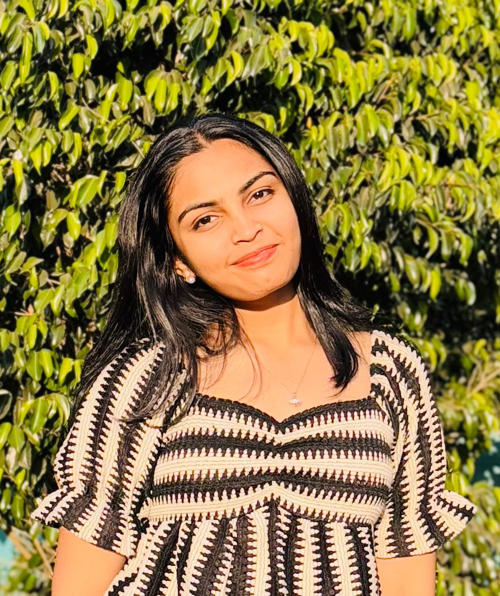

NAME: Tanisha Sachit Bhalekar

SUMMARY
- I am a third-year Computer Science student at Pillai College of Engineering, specializing in Artificial Intelligence and Data Science. As an aspiring data analyst, I am passionate about working with data to uncover insights and solve real-world problems. Alongside my technical journey, I am also learning web development. I have a strong interest in arts and event management, and I actively contribute to college festivals and student council activities, effectively balancing academics and extracurricular commitments.
EDUCATION
- Bachelor of Engineering in Computer Science (AI & Data Science)
Pillai College of Engineering, Navi Mumbai
2025 – Present
- Currently in 3rd year
- Average SGPI in 2nd year: 9.6
- Higher Secondary (Class XII)
J.H. Ambani School, Lodivali
- Year of completion: 2023
- Percentage: 83.4%
- Secondary (Class X)
J.H. Ambani School, Lodivali
- Year of completion: 2021
- Percentage: 84.6%
Work Experience & Activities
-
Creatives Member – Tech Alegria & Alegria: The Festival of Joy
2023 (Second Year)
Designed event creatives and posters
Contributed to the overall theme and artistic direction
Coordinated with multiple departments to ensure event success
-
Student Council Member – Pillai College of Engineering
2023 (Second Year)
Played a key role in organizing student events
Balanced council responsibilities with academic performance
Demonstrated leadership, teamwork, and time management skills
skills
-
Programming Languages: HTML, CSS, Python, C, Java
- Tools & Platforms: Git, GitHub
- Areas of Interest: Data Analysis, Web Development, Event Management, Arts
- Certifications: Blockchain Development (completed course)
Hobbies
contact Me